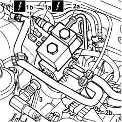
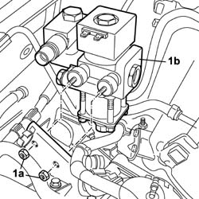

1044E10 cng injection system pressure reduction unit - r r
- Path
- Procedures > 10 ENGINE > 1044 FUEL CIRCUIT PUMP/AND DEVICES > 1044E gas pressure control device > 1044E10 cng injection system pressure reduction unit - r r
- Kind
- repair procedure (removal / refitting; the operation number is the code)
- Applies to
- all engines; all production periods; only with equipment: BIPOWER
- Interactive page
- https://sloeber94.github.io/elrnDB-fDbl/en/#/2584541
Applies to: all engines; all production periods; only with equipment: BIPOWER
 Removing
Removing
 Refitting
RefittingPosition the vehicle on a lift.
Drain the high and low pressure circuit as described in the specific operation 1042A02 C.N.G. - FUEL SYSTEM Safety check .
1. Disconnect the electrical connections for the pressure sensor (1a) and methane cut-off solenoid (1b).
 | Name | Connector |
|---|---|---|
1a | Methane pressure sensor | K54 |
| Name | Connector |
|---|---|---|
1b | Methane regulation solenoid | L61A |
| Name | Connector |
|---|---|---|
1b | Methane regulation solenoid | L61B |
2. Undo the high-pressure connector (2a) and disconnect the two coolant pipes (2b) from the pressure reducer, releasing the pipes from the retaining bands.
3. Undo the connector and disconnect the low pressure flexible pipe from the pressure reducer.

Applies to: all engines; all production periods; only with equipment: BIPOWER
1. Undo the fixing nuts (1a) and remove the pressure reducer (1b) from the mounting bracket.

Applies to: all engines; all production periods; only with equipment: BIPOWER
Refitting
RemovingFit the pressure reducer to the mounting bracket and tighten the fixing nuts.
Connect the low pressure flexible hose to the reducer.
 | Fastening | Component | Ø | Value (daNm) |
|---|---|---|---|---|
- | Nut | INJECTOR PRESSURE REDUCTION UNIT PIPE.../.. | - | (on pressure reduction unit) 7 |
Connect the high pressure connector to the pressure reducer.
| Fastening | Component | Ø | Value (daNm) |
|---|---|---|---|---|
- | Nut | CNG SUPPLY LINE FITTINGS | - | (high pressure on pressure reduction unit) 2.5 |
Connect the two coolant pipes to the pressure reducer and secure them using the bands.
Connect the electrical connections for the pressure sensor and methane cut-off solenoid.
| Name | Connector |
|---|---|---|
- | Methane pressure sensor | K54 |
| Name | Connector |
|---|---|---|
- | Methane regulation solenoid | L61A |
| Name | Connector |
|---|---|---|
- | Methane regulation solenoid | L61B |
Manually set the CNG cut-off solenoids to the open position and check that the system is working.
Connect the Examiner diagnostic instrument in the 'Active Diagnosis' environment, and select and run 'Gas solenoids relay' to allow the solenoids to open and the CNG system operating pressure to be reset; read the pressure value given by the sensor (located on the pressure reduction unit in the engine compartment) which should be greater than or equal to 11 bar, otherwise it will not be possible to switch from petrol to methane.
Remove the vehicle from the lift.
1042A06 C.N.G. - FUEL SYSTEM check for any leaks using electronic detector following operations .
Topics linked from this page (2)
- 1042A02 C.N.G. - FUEL SYSTEM Safety check
- 1042A06 C.N.G. - FUEL SYSTEM check for any leaks using electronic detector following operations